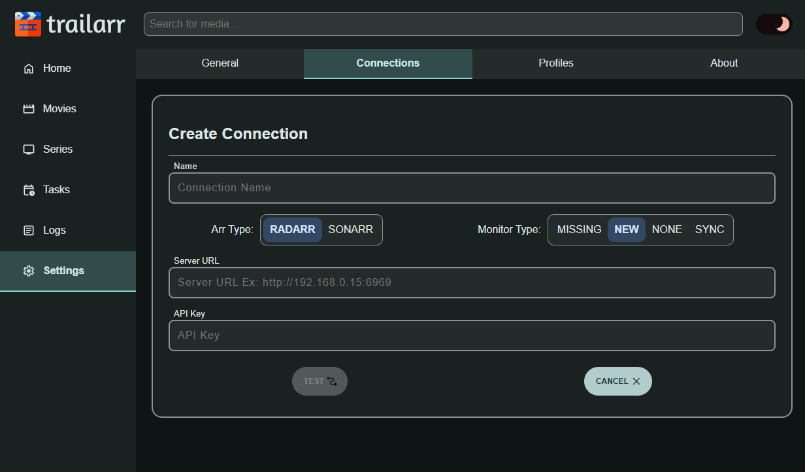

Connections
Once your Profiles are set up to your liking, it's time to add your Radarr and Sonarr connections. This allows Trailarr to communicate with your *Arr instances, discover your media, and manage trailers.
{kind=link}
Setting up a connection involves three main steps:
1. Connection Details
- Navigate to
Settings > Connections. - Click on
Add Newbutton.  -
Fill in the basic details for your *Arr instance (e.g., Radarr or Sonarr):
- Name: A friendly name for this connection (e.g., "Main Radarr", "4K Sonarr", or simply "Radarr").
I am adding a
Radarrconnection, so I named itRadarr - Arr Type: Select Radarr or Sonarr.
It's already set to
Radarrby default, so I didn't change it. - Monitor Type: Choose which Media items Trailarr needs to monitor from this connection.
-
Server URL: The full URL of your *Arr instance. Eg:
http://192.168.0.15:6969Do NOT use
localhostDo not use
localhostas there are numerous problems with that and it might not always work!Instead use a static IP address
-
API Key: Your API key from Radarr/Sonarr (found in its
Settings > Generalsection). - Once these details are filled in, the
Testbutton will become available, click the button. - Trailarr will attempt to connect to the *Arr API. Upon a successful connection:
- The Arr API version will be displayed.
- Trailarr will automatically fetch the root folders configured in that *Arr instance.
- Name: A friendly name for this connection (e.g., "Main Radarr", "4K Sonarr", or simply "Radarr").
I am adding a
{kind=link}
If the connection fails, an error will be shown with details, correct them and click Test again!
2. Path Mappings
After a successful initial test, Trailarr needs to know how to access the media files managed by this Arr instance. This is where you map the root folders reported by the Arr API to the paths where Trailarr can find them.
Remeber the Volume Mappings we set during installation, we use them here!
{kind=link}
-
For each root folder retrieved from the *Arr instance, you'll see a "Path From" and a "Path To" field.
- Path From (read only): This is the root folder path as known by your *Arr instance (e.g.,
/moviesor/tv). This field is usually read-only. - Path To: This is where you tell Trailarr to find the contents of that "Path From" folder within Trailarr's own file system (i.e., inside its Docker container).
Use the üìÅ icon next to the text input field for
Path To, a dialog will open showing files and folders inside Trailarr container, navigate to the folder for thePath Toand clickConfirm.You can
DeleteaPath Mappingby clicking on theXbutton next to it!- It is NOT recommended to delete them unless you know what you are doing!
- You can remove it if your
Path Fromis same asPath To. - You can leave them there even if
Path From = Path To.
We have some examples (the same ones from
Docker Compose):Examples 1 & 2 - TRaSH Guides - SAME path as
Radarr/SonarrIf you used a
volume mappingthat is SAME asRadarr/SonarrinTrailarrthenPath Tois same asPath To:ORservices: radarr: image: ghcr.io/hotio/radarr:latest # Other options here volumes: - /docker/appdata/radarr:/config - /data:/data # Other options here sonarr: image: ghcr.io/hotio/sonarr:latest # Other options here volumes: - /docker/appdata/sonarr:/config - /data:/data # Other options here trailarr: image: nandyalu/trailarr:latest # Other options here volumes: - /docker/appdata/trailarr:/config - /data:/data # Other options hereThe folder dialog might already in the folder you are looking for, just pressservices: radarr: image: ghcr.io/hotio/radarr:latest # Other options here volumes: - /docker/appdata/radarr:/config - /mnt/movies_disk/media/movies:/media/movies # Other options here sonarr: image: ghcr.io/hotio/sonarr:latest # Other options here volumes: - /docker/appdata/sonarr:/config - /mnt/series_disk/media/tv:/media/tv # Other options here trailarr: image: nandyalu/trailarr:latest # Other options here volumes: - /docker/appdata/trailarr:/config - /mnt/movies_disk/media/movies:/media/movies - /mnt/series_disk/media/tv:/media/tv # Other options hereConfirm!Example 3 - DIFFERENT path than
Radarr/SonarrIf you used a
volume mappingwhich is DIFFERENT than what you had inRadarr/Sonarr, meaning - we changed the actual location of where the media files are present, so we need to tellTrailarrwhere to find them:# USE THIS INSTEAD radarr: # other config volumes: - /mnt/disk1/media/movies:/data sonarr: # other config volumes: - /mnt/disk2/media/tv:/data trailarr: # other config volumes: - /mnt/disk1/media/movies:/data/movies # <-- MODIFIED - /mnt/disk2/media/tv:/data/tv # <-- MODIFIED- The root folder for
Radarrconnection is/data/moviesor under that folder! - The root folder for
Sonarrconnection is/data/tvor under that folder!
Navigate to the folder and press
Confirm!So, when Trailarr gets a Movie folder path it will use the
Path Mappingto convert it like thisTrailarr knows where to find it, so all will work as expected!
Example 4 - Windows users
We used
volume mappingslike this forTrailarr:services: trailarr: # Other options here volumes: - trailarr_data:/config # Docker volume for appdata, the first part `trailarr_data` is the volume name - M:\Movies:/m/movies # Movies drive - R:\TV:/r/tv # TV series drive 1 - S:\TV:/s/tv # TV series drive 2 - T:\TV:/t/tv # TV series drive 3 restart: unless-stopped volumes: trailarr_data: # volume name, should match the volume name in the service # Any extra options for the volume if needed- The root folder for
Radarrconnection is/m/moviesor under that folder! - The root folders for
Sonarrconnection are:/r/tv/s/tv/t/tv
Navigate to the appropriate folder and press
Confirm!Example 5 - Non-Docker
Radarr/SonarrSince
RadarrandSonarrare Non-Docker installations, we don't have anyvolume mappingsfor them, so we created some, now we need to tellTrailarrwhere to find them!If we used something like this
services: trailarr: # Other options here volumes: - /docker/appdata/trailarr:/config # appdata - /mnt/disk1/movies:/media/movies # Movies Folder - /mnt/disk2/tv:/media/tv # TV Folder restart: unless-stopped # Other options here- The root folder for
Radarrconnection is/media/moviesor under that folder! - The root folder for
Sonarrconnection is/media/tvor under that folder!
Navigate to the folder and press
Confirm!So, when Trailarr gets a Movie folder path it will use the
Path Mappingto convert it like thisRadarr Media Path: '/mnt/disk1/movies/The Matrix (1999)' Trailarr Media Path: '/media/movies/The Matrix (1999)'Trailarr knows where to find it, so all will work as expected!
- Path From (read only): This is the root folder path as known by your *Arr instance (e.g.,
Once all Path Mappings are filled out, you should have something like below, you can move on to next step!
{kind=link}
Crucially, ensure that each "Path From" is correctly mapped to its corresponding location in Trailarr's file system.
Warning
Volume Mappings used during Installation and Path Mappings are connected to each other - Whenever you modify the Volume Mappings you need to update the relevant Connection to update the Path Mappings as well!
3. Validate & Submit
- Once you have updated the "Path To" for all root folders, the
Testbutton will become enabled again. - Click this button. Trailarr will now attempt to validate these path mappings by checking if it can access them.
-
The server will return a result indicating success or failure.
-
If all mappings are validated successfully, the
Testbutton will change toSubmit, click it to save the connection.
{kind=link}
You have now successfully added an *Arr connection! Trailarr will begin to sync media information from this instance. ü•≥üéâ
You can repeat the same steps for other Radarr/Sonarr connections you want Trailarr to monitor!
We are almost done with the seup, just read some information and tips we put together for you in Next Steps.